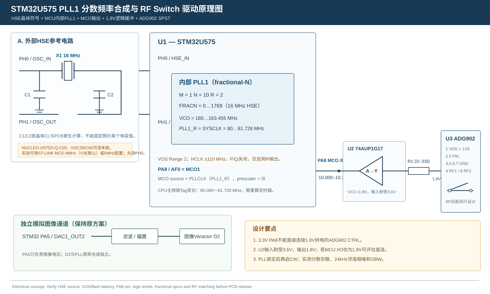

STM32U575 PLL1 分数频率合成与 MCO 移频时钟：详细设计说明
版本： PLL1-MCO Rev.B（详细设计与验证版）
日期： 2026-11-16
目标平台： STM32U575ZIT6Q / NUCLEO-U575ZI-Q
用途： 多节点模拟图像反散射的移频时钟产生
目标： 每个 Tag 输出 10.000 MHz～10.216 MHz 时钟，相邻节点间隔 24 kHz
核心架构： 16 MHz HSE → STM32U575 PLL1 fractional-N → PLL1_R → MCO /8 → 1.8 V 逻辑缓冲 → ADG902 CTRL
设计状态： 本文是基于 ST 官方数据手册、参考手册和 NUCLEO 用户手册形成的工程设计方案。频率表为理论计算值；尚未在实物板上验证 MCO 分数杂散、相位噪声、24 kHz 邻道性能及完整图像链路。不得将计算值视为实测或量产保证。
0. 设计结论
原来的外部 LC VCO + 变容调谐 + ÷16 测频 + STM32 DAC 反馈方案，对当前 STM32U575 平台而言过于复杂。STM32U575 内部 PLL1 支持 13 bit FRACN 分数配置，可以直接合成 10 MHz 附近的可编程时钟，再从 MCO 引脚输出。
本方案采用：
- HSE：16 MHz 外部晶体；
- PLL1 输入分频 M=2，整数倍频 N=20，PLL1_R 输出分频 R=2；
- PLL1 输入参考为 8 MHz；
- FRACN：根据 Tag ID 设置；
- PLL1 VCO：160.000～163.456 MHz；
- PLL1_R：80.000～81.728 MHz；
- MCO：PLL1_R /8，得到 10.000～10.216 MHz；
- PA8 / AF0：MCO 输出；
- 74AUP1G17：将 3.3 V MCO 转换为 1.8 V 逻辑；
- ADG902：由 1.8 V 时钟驱动射频反射开关。
本方案取消： 外置 LC VCO、VCO 调谐变容管 D1、VCO 放大器、外部 ÷16 分频器、外部测频计数支路、DAC 频率反馈和 Tag 本地 FLL。 本方案保留： STM32U575、模拟图像 DAC（PA5）、图像调制变容二极管 D2、ADG902、CW 激励源和原有图像接收链路。
这里取消的是 Tag 外部测频与反馈环（FLL），不是 PLL 内部的锁相机制。PLL 仍然依靠 HSE 参考时钟自动锁定。
1. 系统边界与工作原理

本设计只负责产生 RF Switch 的低频控制时钟，不直接产生 2.4 GHz RF 载波，也不替代图像模拟调制链路。
- STM32U575 的 HSE 提供 16 MHz 参考时钟。
- PLL1 fractional-N 产生可编程的 PLL1_R 时钟。
- MCO 选择 PLL1_R 并 /8，输出 10.xxx MHz 方波。
- 74AUP1G17 将 PA8 的 3.3 V 逻辑转换为 ADG902 所需的 1.8 V 逻辑。
- ADG902 周期性切换 RF 反射状态，使外部 CW 激励在反射频谱中出现对应的频移分量。
- PA5/DAC1_OUT2 继续输出图像模拟电压，驱动独立的图像变容二极管 D2。
本文件不包含 D2 的 2.4 GHz 偏置、阻抗匹配、天线和完整 RF 网络。允许出现镜频不等于可以忽略方波高次谐波、分数 PLL 杂散或邻道干扰。
2. PLL1 分数频率合成原理
2.1 频率关系
令 HSE 输入频率为 fHSE，PLL1 输入分频为 M，整数倍频为 N，分数系数为 FRACN，R 输出分频为 R：
f_{\mathrm{PLL1,in}}=\frac{f_{\mathrm{HSE}}}{M}f_{\mathrm{VCO}}=f_{\mathrm{PLL1,in}}
\left(N+\frac{\mathrm{FRACN}}{8192}\right)f_{\mathrm{PLL1\_R}}=\frac{f_{\mathrm{VCO}}}{R}MCO 选择主 PLL 输出（PLL1_R / PLLCLK），再进行 8 分频：
f_{\mathrm{MCO}}=\frac{f_{\mathrm{HSE}}}
{M\cdot R\cdot8}
\left(N+\frac{\mathrm{FRACN}}{8192}\right)FRACN 是 13 bit 参数，合法范围为 0～8191。FRACN 每增加 1，MCO 频率变化：
\Delta f_{\mathrm{MCO}}=
\frac{f_{\mathrm{HSE}}}{M\cdot R\cdot8\cdot8192}2.2 推荐最终参数
选择 16 MHz HSE，PLL 输入 /2 得到 8 MHz：
| 参数 | 配置 | 说明 |
|---|---|---|
| HSE | 16 MHz | 外部晶体参考 |
| PLL1 source | HSE | 最终 Tag 使用稳定外部参考 |
| PLL1M | 2 | 16 MHz /2 = 8 MHz |
| PLL1N | 20 | 整数倍频 |
| PLL1R | 2 | VCO 输出 /2 |
| PLL1FRACN | 0～3539 | 按 Tag ID 配置 |
| PLL1 输入范围 | 8～16 MHz 档 | PLL 输入为 8 MHz |
| PLL1_R 输出 | Enable | 只使用 R 输出 |
| PLL1_P / PLL1_Q | Disable | 本方案不使用 |
| MCO source | PLLCLK（PLL1_R） | RCC 主 PLL 时钟输出 |
| MCO prescaler | /8 | 输出 10.xxx MHz |
| MCO pin | PA8 / AF0 | STM32U575 引脚复用表确认 |
代入：
f_{\mathrm{PLL1,in}}=16/2=8\ \mathrm{MHz}f_{\mathrm{VCO}}=8\ \mathrm{MHz}
\left(20+\frac{\mathrm{FRACN}}{8192}\right)f_{\mathrm{PLL1\_R}}=80\ \mathrm{MHz}
+488.28125\cdot\mathrm{FRACN}\ \mathrm{Hz}\boxed{f_{\mathrm{MCO}}=
10\ \mathrm{MHz}
+61.03515625\cdot\mathrm{FRACN}\ \mathrm{Hz}}因此，MCO 理论设置步进约 61.035 Hz。
本配置的 PLL1 VCO 为 160.000～163.456 MHz，PLL1_R 为 80.000～81.728 MHz。VCO 在 STM32U575 允许范围内；PLL1_R 输出和 HCLK 均低于 Voltage Scaling Range 2 的 110 MHz 上限。推荐 VOS Range 2，并根据实际 VDD/HCLK 设置 Flash latency。
2.3 为什么选择 M=2、N=20
若使用 M=1、N=10，16 MHz HSE 会直接作为 PLL 输入，FRACN 对 MCO 的频率步进约 122.070 Hz。
本方案采用 M=2、N=20：
- PLL 输入降低到 8 MHz；
- VCO 中心仍为 160 MHz；
- PLL1_R 中心仍为 80 MHz；
- MCO 中心仍为 10 MHz；
- FRACN 分辨率提高一倍，约 61.035 Hz。
8 MHz PLL 输入位于数据手册允许的 4～16 MHz 范围内，PLL 输入范围字段选择 8～16 MHz 档。
更细的 FRACN 分辨率只改善频率量化误差，不会自动改善 HSE 精度、PLL 相位噪声或分数杂散。
3. 10 个 Tag 的 FRACN 频率表
目标频率：
f_i^*=10\ \mathrm{MHz}+i\cdot24\ \mathrm{kHz},
\quad i=0,\ldots,9FRACN 取整：
\mathrm{FRACN}_i=
\operatorname{round}
\left(
\frac{f_i^*-10\ \mathrm{MHz}}
{61.03515625\ \mathrm{Hz}}
\right)| Tag ID | FRACN | 理论 MCO 频率 (MHz) | 量化误差 (Hz) |
|---|---|---|---|
| 0 | 0 | 10.000000000 | 0.0 |
| 1 | 393 | 10.023986816 | -13.2 |
| 2 | 786 | 10.047973633 | -26.4 |
| 3 | 1180 | 10.072021484 | +21.5 |
| 4 | 1573 | 10.096008301 | +8.3 |
| 5 | 1966 | 10.119995117 | -4.9 |
| 6 | 2359 | 10.143981934 | -18.1 |
| 7 | 2753 | 10.168029785 | +29.8 |
| 8 | 3146 | 10.192016602 | +16.6 |
| 9 | 3539 | 10.216003418 | +3.4 |
最大 FRACN 量化误差约 30.5 Hz，远小于 24 kHz 信道间隔。完整表格见 tag_frequency_table.csv。
注意： 频率表假设 HSE 恰好为 16.000000 MHz。实际输出频率会随每块板的 HSE 实际频差同比例变化。FRACN 量化误差不等于晶体绝对频率误差。
4. 时钟树与 CPU 运行频率
推荐将 PLL1_R 同时用作 SYSCLK 和 MCO 时钟源，AHB prescaler=/1：
| 时钟节点 | 频率 |
|---|---|
| HSE | 16 MHz |
| PLL1 输入 | 8 MHz |
| PLL1 VCO | 160.000～163.456 MHz |
| PLL1_R | 80.000～81.728 MHz |
| SYSCLK | 80.000～81.728 MHz |
| HCLK（AHB /1） | 80.000～81.728 MHz |
| MCO（PLL1_R /8） | 10.000～10.216 MHz |
CPU 主频会随 Tag ID 变化，而不是固定 80 MHz。80～81.728 MHz 低于 Range 2 的 110 MHz HCLK 上限。
对当前 320×240、1 FPS 图像链路，80 MHz 可作为首轮验证配置，但必须测量 DCMI+DMA、65-tap FIR、关键帧检测和 DAC DMA 的最坏执行时间，不能仅凭理论假设认定足够。
如果 CPU 需要保持更高且固定的主频，可将 SYSCLK 改用独立时钟源或额外 PLL2，但会增加功耗/复杂度；本方案优先采用共享 PLL1_R 的简化架构。
4.1 图像 DAC 采样率重算
若 APB prescaler=/1，相关定时器时钟来自 PCLK，则：
f_s=\frac{f_{\mathrm{TIM}}}
{(PSC+1)(ARR+1)}例如 100 kSa/s：
- Tag0：HCLK=80 MHz，PSC=0、ARR=799，可得 100 kSa/s；
- Tag9：HCLK≈81.728 MHz，PSC=0、ARR=816，可得约 100.0337 kSa/s。
若要求严格保持长期平均采样率，可评估 DMA 交替更新 ARR 的分数周期方案；但这会引入一个 timer tick 量级的采样间隔变化，需评估对图像重建的影响。也可重新选择独立 timer kernel clock，但要核对 STM32U575 对应 TIMx 的时钟 mux。
所有依赖 HCLK/PCLK 的 UART、SysTick、定时器和 DAC 触发频率都应按实际 FRACN 重算，不能继续使用固定 80/160 MHz 的旧配置。
5. NUCLEO-U575ZI-Q 的 HSE 参考源
5.1 检查 X3 是否实际安装
NUCLEO-U575ZI-Q 的板载 16 MHz HSE 晶体 X3 及其负载电容位置在部分板卡版本/配置中属于可选未装。不能只看用户手册就假设实板已有晶体。
若使用板载 16 MHz 晶体，UM2861 Rev.10 给出的配置为：
- SB47、SB49：OFF；
- SB48：OFF；
- SB4、SB5：ON；
- X3、C59、C60 按晶体 CL 与 PCB 寄生选型和安装。
用户手册给出的晶体示例为 16 MHz、8 pF、20 ppm。C59/C60 应根据晶体负载电容 CL、PCB寄生和 AN2867 计算，不应固定照抄。
5.2 外部有源时钟实验方式
若 X3 未安装，可使用外部 16 MHz CMOS 有源振荡器：
- 输出接 PH0/OSC_IN；
- STM32 配置 HSE bypass；
- 按 UM2861 的 external oscillator to PH0 配置焊桥；
- 确认输出幅度、占空比、频率和 PH0 输入电气限制。
该方式适合 bring-up，最终多 Tag 建议采用稳定度明确的独立参考源。
5.3 ST-LINK MCO 仅用于实验
UM2861 描述 ST-LINK-V3E 的 MCO 默认 8 MHz，且可能随固件升级变化；板上默认连接状态也需按版本和焊桥确认。它可以用于单板 bring-up，但没有实测稳定度时不能作为最终多 Tag 的高精度参考。
若 PH0 实测为 8 MHz，可使用 HSE bypass、M=1、N=20、R=2、MCO /8，仍得到相同的 FRACN 表。该配置只用于实验，最终设计仍建议 16 MHz HSE 晶体。
6. MCO 输出与 ADG902 电平接口
6.1 PA8 输出配置
STM32U575 数据手册确认 PA8 可复用为 AF0 MCO。建议：
- GPIO mode：Alternate Function；
- AF：AF0；
- Output type：Push-pull；
- Speed：Very High；
- Pull：No Pull；
- MCO source：PLLCLK（PLL1_R）；
- MCO prescaler：/8。
PA8 输出 3.3 V 域的 10.xxx MHz 方波。走线尽量短，避免大电容探头直接加载 MCO。
6.2 为什么需要 1.8 V 缓冲
ADG902 的 VDD 工作范围为 1.65～2.75 V，CTRL 输入不能超过器件电源电压。NUCLEO 默认 MCU I/O 为 3.3 V，因此不能将 PA8 直接连接到 1.8 V 供电的 ADG902 CTRL。
推荐 Nexperia 74AUP1G17GW：
| 引脚 | 连接 |
|---|---|
| 1 | NC，不连接 |
| 2 | A，接 PA8/MCO |
| 3 | GND |
| 4 | Y，接 ADG902 CTRL |
| 5 | VCC，接 1.8 V |
74AUP1G17 的供电范围为 0.8～3.6 V，输入耐受至 3.6 V，因此可在 VCC=1.8 V 时接收 3.3 V MCO 输入并输出 1.8 V 逻辑。U1 附近放置 100 nF 去耦；输出端预留 22～33 Ω 串联阻尼电阻，依据实测边沿调整。
ADG902 使用 1.8 V 供电，并在 VDD 附近放置 100 nF 去耦。若未来整个 MCU I/O 域也运行在 1.8 V，且所有摄像头/调试/通信外设均兼容，才可评估省略缓冲器。
6.3 射频开关如何产生移频
10.xxx MHz 是数字控制时钟，不是 2.4 GHz RF 信号。ADG902 在这条时钟驱动下切换 RF 反射状态。真实反散射频谱取决于 CW 激励、ADG902 两种状态的反射系数、D2 图像变容阻抗、匹配网络、天线和传播信道。
本设计允许镜频存在，但仍需测量方波高次谐波、分数杂散和邻道干扰。图像 D2 的偏置与 2.4 GHz 匹配不属于本文件已定型内容。
7. 固件配置与启动流程
7.1 Tag ID 与 FRACN
每块 Tag 在 Flash 参数、编译期宏或板上 ID 电阻中保存 Tag ID。启动时查表取得 FRACN；无需在线测频、DAC 调谐或 SDR 回传。
7.2 初始化顺序
- 配置 HSE 晶体模式或 HSE bypass，启动 HSE 并等待 HSERDY；
- 配置 PWR Voltage Scaling Range 2，等待 VOS ready；
- 根据实际 VDD/HCLK 设置 Flash latency；
- 若 PLL1 当前是 SYSCLK，先切换到 HSE/MSI，再关闭 PLL1；
- PLL1 source=HSE，M=2、N=20、R=2；
- PLL1 输入范围选择 8～16 MHz（本方案输入 8 MHz）；
- 配置 PLL1MBOOST/EPOD 等辅助项，按 CubeMX 生成配置核对；
- 只使能 PLL1_R，关闭不需要的 P/Q 输出；
- Tag0 使用 FRACN=0 整数模式；Tag1～9 写入 FRACN 并启用 fractional mode；
- 使能 PLL1，等待 PLL1RDY；
- 设置 AHB/APB prescaler，首版建议 /1；
- SYSCLK 切换至 PLL1_R，HCLK 变为 80～81.728 MHz；
- MCO source=PLLCLK（PLL1_R），MCO prescaler=/8；
- PA8 配置 AF0 MCO；
- 初始化 1.8 V 逻辑电源、74AUP1G17 和 ADG902；
- 等待时钟稳定后再开启 CW 激励和有效模拟图像传输。
Fractional mode 锁定时间在数据手册指定条件下最大约 65 µs；工程上建议留出更长保守等待时间，并通过实测确认稳定后再打开 RF 激励。
7.3 LL 初始化代码骨架
以下展示最终 16 MHz HSE 方案的配置关系。代码不是完整可直接编译的工程；仍需补充 HSE 启动、VOS、Flash latency、超时保护、GPIO 时钟和外设重配。函数名以实际 STM32CubeU5 版本为准。
#include "main.h"
#include "system_stm32u5xx.h"
#include "stm32u5xx_ll_rcc.h"
#include "stm32u5xx_ll_gpio.h"
static const uint16_t tag_fracn[10] = {
0, 393, 786, 1180, 1573,
1966, 2359, 2753, 3146, 3539
};
static uint32_t pll1_r_hz(uint16_t fracn)
{
/* HSE=16 MHz, M=2, N=20, R=2 */
uint64_t numerator =
16000000ULL * (20ULL * 8192ULL + fracn);
return (uint32_t)(numerator / (2ULL * 2ULL * 8192ULL));
}
void ShiftClock_Init(uint8_t tag_id)
{
uint16_t fracn = (tag_id < 10U) ? tag_fracn[tag_id] : 0U;
/* HSE must already be configured and HSERDY=1.
Configure VOS Range 2 and Flash latency before raising HCLK.
If PLL1 is current SYSCLK, switch to HSE/MSI first. */
LL_RCC_PLL1_Disable();
while (LL_RCC_PLL1_IsReady()) {
/* Add timeout/watchdog in production. */
}
LL_RCC_PLL1_ConfigDomain_SYS(
LL_RCC_PLL1SOURCE_HSE,
2U, /* M */
20U, /* N */
2U /* R */
);
LL_RCC_PLL1_SetVCOInputRange(LL_RCC_PLLINPUTRANGE_8_16);
LL_RCC_SetPll1EPodPrescaler(LL_RCC_PLL1MBOOST_DIV_1);
LL_RCC_PLL1_DisableDomain_SAI(); /* P unused */
LL_RCC_PLL1_DisableDomain_48M(); /* Q unused */
LL_RCC_PLL1_EnableDomain_SYS(); /* R enabled */
if (fracn == 0U) {
LL_RCC_PLL1FRACN_Disable();
} else {
LL_RCC_PLL1_SetFRACN(fracn);
LL_RCC_PLL1FRACN_Enable();
}
LL_RCC_PLL1_Enable();
while (!LL_RCC_PLL1_IsReady()) {
/* Add timeout/watchdog in production. */
}
LL_RCC_SetAHBPrescaler(LL_RCC_SYSCLK_DIV_1);
LL_RCC_SetAPB1Prescaler(LL_RCC_APB1_DIV_1);
LL_RCC_SetAPB2Prescaler(LL_RCC_APB2_DIV_1);
LL_RCC_SetAPB3Prescaler(LL_RCC_APB3_DIV_1);
LL_RCC_SetSysClkSource(LL_RCC_SYS_CLKSOURCE_PLL1);
while (LL_RCC_GetSysClkSource() !=
LL_RCC_SYS_CLKSOURCE_STATUS_PLL1) {
}
SystemCoreClock = pll1_r_hz(fracn);
LL_RCC_ConfigMCO(LL_RCC_MCO1SOURCE_PLLCLK,
LL_RCC_MCO1_DIV_8);
/* Enable GPIOA clock before configuring PA8. */
LL_GPIO_SetPinMode(GPIOA, LL_GPIO_PIN_8,
LL_GPIO_MODE_ALTERNATE);
LL_GPIO_SetAFPin_8_15(GPIOA, LL_GPIO_PIN_8,
LL_GPIO_AF_0);
LL_GPIO_SetPinOutputType(GPIOA, LL_GPIO_PIN_8,
LL_GPIO_OUTPUT_PUSHPULL);
LL_GPIO_SetPinSpeed(GPIOA, LL_GPIO_PIN_8,
LL_GPIO_SPEED_FREQ_VERY_HIGH);
LL_GPIO_SetPinPull(GPIOA, LL_GPIO_PIN_8,
LL_GPIO_PULL_NO);
/* Recalculate timer/DAC/UART clocks from actual FRACN. */
}运行时修改 FRACN 需按参考手册规定的 FRACEN 清零、等待参考周期、写入 FRACN、重新使能的顺序操作。当前设计只在启动时设置一次，不建议在图像发送期间动态改频。
8. 图像采样与时钟兼容性
PLL1_R 作为 SYSCLK 后，HCLK 随 Tag ID 变化。必须重新配置 DCMI 时序、65-tap FIR 任务预算、DAC 定时器更新频率、UART 波特率、SysTick 和所有依赖 HCLK/PCLK 的定时器。
若 APB prescaler=/1，相关定时器时钟来自 PCLK，则：
f_s=\frac{f_{\mathrm{TIM}}}{(PSC+1)(ARR+1)}100 kSa/s 示例：
- Tag0：HCLK=80 MHz，PSC=0、ARR=799，可得 100 kSa/s；
- Tag9：HCLK≈81.728 MHz，PSC=0、ARR=816，可得约 100.0337 kSa/s。
若要求严格平均采样率，需评估 DMA 交替更新 ARR 的分数周期方案或独立 timer kernel clock。必须测量采样时刻变化对图像恢复的影响。
建议在固件中按 FRACN 计算真实 HCLK，更新 SystemCoreClock 和定时器参数；还应检查当前 HAL 的 SystemCoreClockUpdate 是否正确计入 PLL FRACN，不能默认一定支持。
9. HSE 精度、量化误差与 24 kHz FDMA
9.1 两种误差来源
- FRACN 量化误差：表格最大约 30.5 Hz；
- HSE 绝对频率误差：若总稳定度为 ±20 ppm，在 10 MHz 处约 ±200 Hz，在 10.216 MHz 处约 ±204 Hz。
因此实际频点误差主要由 HSE 决定，而不是 FRACN 的 61 Hz 量化步进。
若相邻两个 Tag 的晶体误差方向相反，中心间距最坏减少约 0.4 kHz，名义 24 kHz 间隔可能降到约 23.6 kHz。若每节点真实 RF 占用带宽不超过 20 kHz，剩余名义保护带约 3.6 kHz。
9.2 Fractional spur 与相位噪声
ST 数据手册给出的 PLL jitter 是特定测试条件下的指标，不能直接代替本方案 160～163.5 MHz VCO、10 MHz MCO、24 kHz 偏移处的相位噪声曲线。
必须实测：
- FRACN=0 的整数模式；
- FRACN=393、786、1180 等分数模式；
- ±24 kHz、±48 kHz、±72 kHz 附近的杂散；
- 10 个 Tag 同时工作时的邻道泄漏；
- 温度、供电和晶体批次变化下的中心频率误差。
频率分辨率足够不代表 24 kHz FDMA 一定成立。 最终结论必须由实际 RF 频谱和图像恢复结果决定。
10. 功耗估算
PLL 功耗必须与 MCU 核心功耗分开统计。ST 数据手册给出的参考测试点包括：VCO=160 MHz、一个输出、Range 1 时，LDO 供电约 370 µA、SMPS 供电约 260 µA；VCO=200 MHz、Range 2 时分别约 435 µA 和 300 µA。本方案是 VCO 160～163.456 MHz、Range 2，数据手册没有完全相同的测试点，不能把上述电流当作本方案保证值。
| 模块 | 功耗说明 |
|---|---|
| HSE 晶体与振荡器 | 由 MCU HSE 驱动，计入 MCU 供电 |
| PLL1 | 数百 µA 量级参考；实际按 VCO/VOS/供电实测 |
| PA8 MCO | 动态功耗取决于 IO 电压、频率、负载电容 |
| 74AUP1G17 | 静态电流低，10 MHz 动态功耗与负载相关 |
| 1.8 V LDO | 计入静态电流和压差损耗 |
| ADG902 CTRL | 输入电容约 2.1 pF，动态电流随频率和负载变化 |
CMOS 时钟驱动的电容负载功耗可用下式做量级估算：
P_{\mathrm{dyn}}\approx C_{\mathrm{load}}V^2fPA8→U1、U1→ADG902 两段的实际负载电容均需估计并测量。不要把 PLL 的 VDD 电流、1.8 V 输出功率和 LDO 输入功率重复相加。
若 PLL1 原本就作为 SYSCLK，PLL 核心功耗是 MCU 原有运行功耗的一部分，不能再次全部计作新增移频模块功耗。但 CPU 频率从 160 MHz 降至 80～81.728 MHz 后，MCU 核心功耗也会变化，必须测整板电流。
11. 元器件清单
| Ref | 器件/规格 | 数量 | 用途/备注 |
|---|---|---|---|
| U1 | STM32U575ZI / NUCLEO-U575ZI-Q | 1 | PLL1、MCO、PA5图像DAC |
| X3 | 16 MHz HSE晶体，建议总稳定度≤20 ppm | 1 | 若板上未装则补装 |
| C59/C60 | HSE晶体负载电容 | 2 | 按 CL 与 PCB 寄生计算 |
| U2 | Nexperia 74AUP1G17GW | 1 | 3.3V输入、1.8V施密特输出 |
| R1 | 22～33 Ω | 1 | U2输出串联阻尼，预留调值 |
| C3 | 100 nF | 1 | U2 1.8V去耦 |
| U3 | ADG902BRMZ | 1 | RF反射开关，原系统已有 |
| C4 | 100 nF | 1 | ADG902电源去耦 |
| U4（可选） | 1.8 V LDO | 1 | 若没有可用1.8V外设电源 |
| D2 | 原图像调制变容二极管 | 1 | 图像模拟调制，独立于PLL频率合成 |
完整采购清单见 BOM.csv。
12. 实验验证计划
| 阶段 | 实验 | 目标 |
|---|---|---|
| 1 | 检查X3、C59/C60、SB4/SB5 | 确认HSE来源和模式 |
| 2 | Tag0，FRACN=0 | PA8输出10.000MHz |
| 3 | FRACN扫描0～3539 | 覆盖10.000～10.216MHz |
| 4 | 连接U2与ADG902 | CTRL电平满足1.8V供电要求 |
| 5 | 测量整数/分数模式频谱 | 观察分数杂散、谐波和占空比 |
| 6 | 接入CW与RF匹配板 | 测实际移频位置、镜频、OBW |
| 7 | 接入PA5/D2图像通道 | 测图像频谱与恢复质量 |
| 8 | 两个Tag同时工作 | 测24kHz相邻通道干扰 |
| 9 | 10个Tag同时工作 | 验证全频点分配和强弱节点 |
| 10 | 真实图像固件运行 | 确认80～81.728MHz CPU时限足够 |
建议保存每个 Tag 的 HSE 实际频率、FRACN、PA8 实测频率、PLL锁定时间、相位噪声/杂散、RF 99% OBW、邻道泄漏、图像 PSNR/SSIM、帧丢失率和各电源轨电流。
13. 风险与设计边界
- NUCLEO-U575ZI-Q 的 16 MHz HSE 晶体 X3 可能未安装，必须检查实物。
- PLL1 fractional spur 和 24 kHz 邻道相位噪声尚未实测。
- HSE 温漂、老化和批次偏差决定多 Tag 实际中心频率误差。
- CPU 主频随 Tag FRACN 变化，图像采样定时器必须同步重算。
- 3.3 V PA8 不可直接驱动 1.8 V 供电的 ADG902 CTRL。
- MCO 方波含高次谐波，需检查其在反散射 RF 频谱中的影响。
- 本文件不包含 D2 的 2.4 GHz 匹配网络和天线设计。
- 不需要外部 FLL，但仍需要研发阶段的频率计、示波器和频谱分析仪进行验证。
14. 官方资料与设计依据
- STM32U575 数据手册 DS13737：PLL输入范围、VCO/R输出范围、FRACN、PLL锁定时间、PLL电流、PA8 AF0。
- STM32U5 参考手册 RM0456：RCC、PLL1、FRACN寄存器、MCO和时钟树。
- NUCLEO-U575ZI-Q 用户手册 UM2861：X3 HSE、焊桥和ST-LINK MCO配置。
- Nexperia 74AUP1G17 数据手册：3.6V耐受输入、1.8V输出、传播延迟与功耗。
- ADI ADG901/ADG902 数据手册：ADG902电源范围、CTRL电平和RF特性。
- NUCLEO-U575ZI-Q 板级原理图：X3及C59/C60可选器件和焊桥。
最终建议： 先在现有 NUCLEO-U575ZI-Q 上验证 HSE → PLL1 fractional-N → MCO /8 → PA8 的单板输出和 10 个 FRACN 频点；再接入 1.8 V 缓冲器和 ADG902。只有在整数/分数模式频谱、24 kHz 邻道干扰和真实图像 OBW 都满足要求后，才将该方案冻结为最终 Tag 频率源。